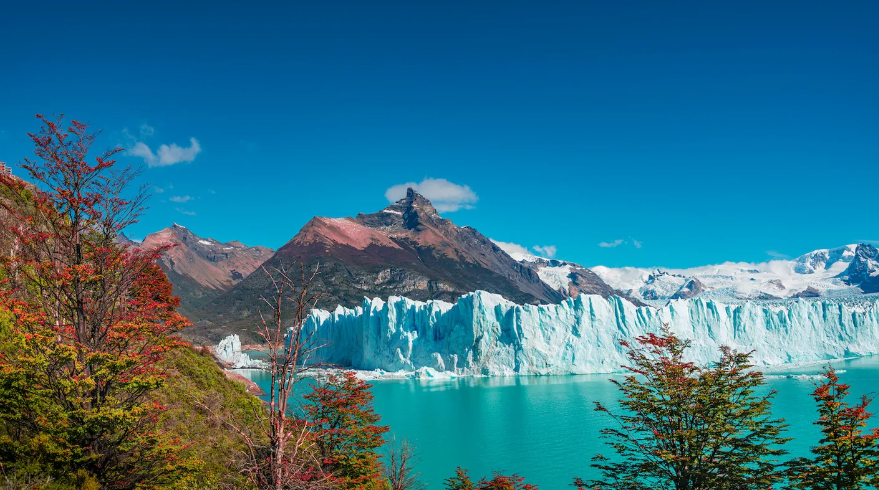
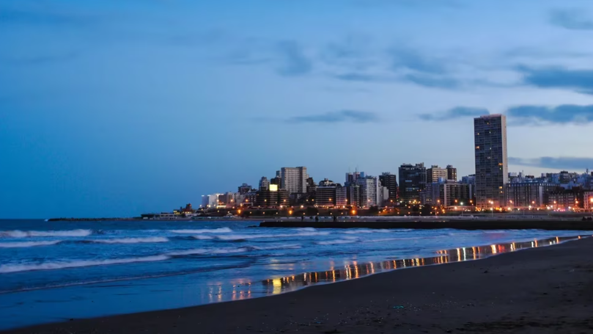

RECORRE LOS MAGNIFICOS DESTINOS DE NUESTRO PAIS
NORTE ARGENTINO

Los mejores lugares para visitar del Norte Argentino son Tilcara, Purmamarca, Salta Capital, Tucuman, Quebrada de Humahuaca,Tafí del Valle, San Salvador de Jujuy, Valles Calchaquíes.
PATAGONIA
Los mejores lugares para visitar de la Patagonia Argentina son Bariloche, El Bolson, Neuquen, El Calafate, Ushuaia,El chalten, Punta arenas, Puerto Madryn, Glaciar Perito Moreno
COSTA ARGENTINA
Los mejores lugares para visitar de la costa Argentina son Mar del Plata, Mar del Tuyu, Santa Teresita, Mar de ajo, Costa del este, Las Toninas, Carilo, Miramar
BUENOS AIRES
Los mejores lugares para visitar en la Capital de Argentina son el Obelisco, Barrio Palermo, El Tigre, Puerto Madero, Belgrano, Barrio San Telmo, Recoleta